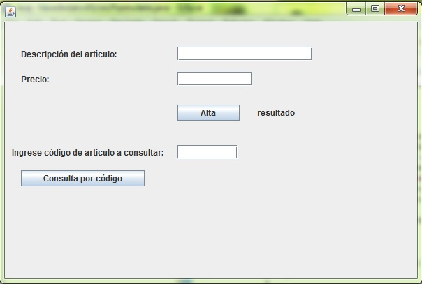
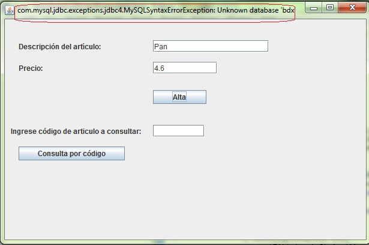
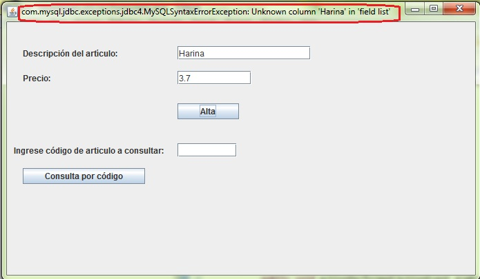
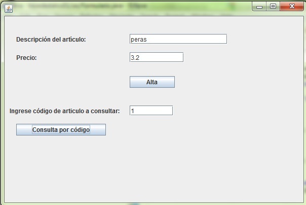

Problema 1
Ya creamos en el concepto anterior una base de datos llamada bd1 y en la misma creamos una tabla llamada articulos.
Procederemos a implementar en Java un programa que nos permita comunicarnos con la base de datos "bd1" e insertar filas en la tabla "articulos" y posteriormente consultar su contenido.
1 - Creamos desde Eclipse un proyecto llamado "basededatos01" y seguidamente con el WindowBuilder creamos una clase llamada "Formulario".
2 - Primero debemos añadir el driver que descargamos (mysql-connector-java-5.1.18-bin.jar) presionamos el botón derecho del mouse sobre nuestro proyecto y seleccionamos la opción "Properties", aparece el siguiente diálogo:

Seleccionamos la opción "Java Build Path", de la parte central seleccionamos la pestaña "Libraries" y procedemos a presionar el botón "Add External JARs...", donde procedemos a buscar el archivo mysql-connector-java-5.1.18-bin.jar
El código fuente de la clase formulario es:
import java.awt.EventQueue;
import javax.swing.JFrame;
import javax.swing.JPanel;
import javax.swing.border.EmptyBorder;
import javax.swing.JLabel;
import javax.swing.JTextField;
import javax.swing.JButton;
import java.awt.event.ActionListener;
import java.awt.event.ActionEvent;
import java.sql.Connection;
import java.sql.DriverManager;
import java.sql.ResultSet;
import java.sql.SQLException;
import java.sql.Statement;
public class Formulario extends JFrame {
private JPanel contentPane;
private JTextField tf1;
private JTextField tf2;
private JLabel labelResultado;
private JButton btnConsultaPorCdigo;
private JLabel lblIngreseCdigoDe;
private JTextField tf3;
/**
* Launch the application.
*/
public static void main(String[] args) {
EventQueue.invokeLater(new Runnable() {
public void run() {
try {
Formulario frame = new Formulario();
frame.setVisible(true);
} catch (Exception e) {
e.printStackTrace();
}
}
});
}
/**
* Create the frame.
*/
public Formulario() {
setDefaultCloseOperation(JFrame.EXIT_ON_CLOSE);
setBounds(100, 100, 606, 405);
contentPane = new JPanel();
contentPane.setBorder(new EmptyBorder(5, 5, 5, 5));
setContentPane(contentPane);
contentPane.setLayout(null);
JLabel lblDescripcinDelArtculo = new JLabel("Descripción del artículo:");
lblDescripcinDelArtculo.setBounds(23, 38, 193, 14);
contentPane.add(lblDescripcinDelArtculo);
tf1 = new JTextField();
tf1.setBounds(247, 35, 193, 20);
contentPane.add(tf1);
tf1.setColumns(10);
JLabel lblPrecio = new JLabel("Precio:");
lblPrecio.setBounds(23, 74, 95, 14);
contentPane.add(lblPrecio);
tf2 = new JTextField();
tf2.setBounds(247, 71, 107, 20);
contentPane.add(tf2);
tf2.setColumns(10);
JButton btnAlta = new JButton("Alta");
btnAlta.addActionListener(new ActionListener() {
public void actionPerformed(ActionEvent arg0) {
labelResultado.setText("");
try {
Connection conexion=DriverManager.getConnection("jdbc:mysql://localhost/bd1","root" ,"");
Statement comando=conexion.createStatement();
comando.executeUpdate("insert into articulos(descripcion,precio) values ('"+tf1.getText()+"',"+tf2.getText()+")");
conexion.close();
labelResultado.setText("se registraron los datos");
tf1.setText("");
tf2.setText("");
} catch(SQLException ex){
setTitle(ex.toString());
}
}
});
btnAlta.setBounds(247, 118, 89, 23);
contentPane.add(btnAlta);
labelResultado = new JLabel("resultado");
labelResultado.setBounds(361, 122, 229, 14);
contentPane.add(labelResultado);
btnConsultaPorCdigo = new JButton("Consulta por código");
btnConsultaPorCdigo.addActionListener(new ActionListener() {
public void actionPerformed(ActionEvent arg0) {
labelResultado.setText("");
tf1.setText("");
tf2.setText("");
try {
Connection conexion=DriverManager.getConnection("jdbc:mysql://localhost/bd1","root" ,"");
Statement comando=conexion.createStatement();
ResultSet registro = comando.executeQuery("select descripcion,precio from articulos where codigo="+tf3.getText());
if (registro.next()==true) {
tf1.setText(registro.getString("descripcion"));
tf2.setText(registro.getString("precio"));
} else {
labelResultado.setText("No existe un artículo con dicho código");
}
conexion.close();
} catch(SQLException ex){
setTitle(ex.toString());
}
}
});
btnConsultaPorCdigo.setBounds(23, 212, 177, 23);
contentPane.add(btnConsultaPorCdigo);
lblIngreseCdigoDe = new JLabel("Ingrese código de articulo a consultar:");
lblIngreseCdigoDe.setBounds(10, 179, 243, 14);
contentPane.add(lblIngreseCdigoDe);
tf3 = new JTextField();
tf3.setBounds(247, 176, 86, 20);
contentPane.add(tf3);
tf3.setColumns(10);
cargarDriver();
}
private void cargarDriver() {
try {
Class.forName("com.mysql.jdbc.Driver");
}catch(Exception ex) {
setTitle(ex.toString());
}
}
}
La interfaz visual de la aplicación a implementar es la siguiente (se solicita el ingrese de la descripción del artículo y su precio, cuando se presiona el botón "Alta" se procede a insertar una fila en la tabla articulos de la base de datos bd1):
Expliquemos ahora el código fuente de la aplicación:
Primero debemos cargar en memoria el Driver, esto lo hacemos mediante el método cargarDriver que es llamado luego desde el constructor de la clase:
private void cargarDriver() {
try {
Class.forName("com.mysql.jdbc.Driver");
}catch(Exception ex) {
setTitle(ex.toString());
}
}
Tenemos una clase llamada "Class" que tiene un método estático llamado forName, al mismo hay que pasar el nombre de la clase a importar:
Class.forName("com.mysql.jdbc.Driver");
com.mysql.jdbc es el nombre del paquete donde se encuentra la clase Driver. Esta el la forma que importamos los driver en Java.
El método forName de la clase Class genera excepciones de tipo Excepcion que deben ser capturadas obligatoriamente (luego por eso encerramos el código en un bloque try/catch.
Si no importamos el driver desde el diálogo Properties del proyecto o indicamos en forma incorrecta el nombre del paquete o clase luego aparece en el título del JFrame un mensaje del error sucedido.
Luego desde el constructor llamamos por única vez al método cargarDriver:
...........
tf3 = new JTextField();
tf3.setBounds(247, 176, 86, 20);
contentPane.add(tf3);
tf3.setColumns(10);
cargarDriver();
}
Veamos ahora cual es el código a implementar cuando se presiona el botón "Alta":
JButton btnAlta = new JButton("Alta");
btnAlta.addActionListener(new ActionListener() {
public void actionPerformed(ActionEvent arg0) {
labelResultado.setText("");
try {
Connection conexion=DriverManager.getConnection("jdbc:mysql://localhost/bd1","root" ,"");
Statement comando=conexion.createStatement();
comando.executeUpdate("insert into articulos(descripcion,precio) values ('"+tf1.getText()+"',"+tf2.getText()+")");
conexion.close();
labelResultado.setText("se registraron los datos");
tf1.setText("");
tf2.setText("");
} catch(SQLException ex){
setTitle(ex.toString());
}
}
});
En el actionPerformed procedemos primero a limpiar la label que puede tener un mensaje de ejecuciones anteriores:
labelResultado.setText("");
Todas las clases orientadas al acceso a base de datos generan excepciones de tipo SQLException y deben ser capturadas obligatoriamente. Lo primero que hacemos es crear un objeto de la clase Connection, para esto la clase DriverManager tiene un método llamado getConnection que retorna un objeto de la clase Connection:
Connection conexion=DriverManager.getConnection("jdbc:mysql://localhost/bd1","root" ,"");
El método getConnection debemos pasarle tres String, el primero indica el nombre de la base de datos que queremos acceder (en este caso "bd1"), el segundo parámetro es el nombre de usuario (recordemos que cuando instalamos el MySQL se crea un usuario por defecto llamado "root") y el último parámetro el la clave del usuario "root", por defecto esta clave es un String vacío.
Como podemos ver también previo a la base de datos tenemos en la cadena de conexión el nombre de nuestro servidor (localhost)
Si nos equivocamos por ejemplo con el nombre de base de datos a comunicarnos (por ejemplo cambiar "bd1" por "bdx") veremos en el título del JFrame el mensaje de error que nos devuelve el MySQL:
Luego creamos un objeto de la clase Statement a partir del objeto de la clase Connection que acabamos de crear:
Statement comando=conexion.createStatement();
La clase Statement tiene un método llamado executeUpdate que le pasamos el comando SQL insert para agregar una fila a la tabla articulos:
comando.executeUpdate("insert into articulos(descripcion,precio) values ('"+tf1.getText()+"',"+tf2.getText()+")");
Como podemos ver generamos el String con el comando insert rescatando los datos de los dos controles de tipo JTextField. Es importante notar que en Java los String están encerrados entre comillas dobles y los contatenamos con el operador +. Las comillas simples son necesarias para los campos de tipo varchar de MySql (como podemos notar el lugar donde se dispondrá el texto de la descripción del artículo deben ir obligatoriamente las comillas simples):
...'"+tf1.getText()+"'...
Si nos olvidamos las comillas simples al generar el String con el comando Insert el MySQL nos devolverá un error que será capturado por el try/catch, por ejemplo si lo ejecutamos con la siguiente sintaxis (sin las comillas simples envolviendo el valor de la descripción):
comando.executeUpdate("insert into articulos(descripcion,precio) values ("+tf1.getText()+","+tf2.getText()+")");
Luego de solicitar la ejecución del comando Insert al MySQL procedemos a llamar al método close de la clase Connection:
conexion.close();
Con lo visto ya podemos agregar filas a la tabla articulos. Veamos ahora como consultar datos. El código a implementar cuando se presiona el botón "Consulta por código" es el siguiente:
btnConsultaPorCdigo = new JButton("Consulta por código");
btnConsultaPorCdigo.addActionListener(new ActionListener() {
public void actionPerformed(ActionEvent arg0) {
labelResultado.setText("");
tf1.setText("");
tf2.setText("");
try {
Connection conexion=DriverManager.getConnection("jdbc:mysql://localhost/bd1","root" ,"");
Statement comando=conexion.createStatement();
ResultSet registro = comando.executeQuery("select descripcion,precio from articulos where codigo="+tf3.getText());
if (registro.next()==true) {
tf1.setText(registro.getString("descripcion"));
tf2.setText(registro.getString("precio"));
} else {
labelResultado.setText("No existe un artículo con dicho código");
}
conexion.close();
} catch(SQLException ex){
setTitle(ex.toString());
}
}
});
De forma similar al Insert procedemos a crear un objeto de la clase Connection y otro objeto de la clase Statement:
Connection conexion=DriverManager.getConnection("jdbc:mysql://localhost/bd1","root" ,"");
Statement comando=conexion.createStatement();
Seguidamente definimos una variable de la clase ResultSet llamada registro y llamamos al método executeQuery de la clase Statement del objeto que acabamos de crear previamente:
ResultSet registro = comando.executeQuery("select descripcion,precio from articulos where codigo="+tf3.getText());
La clase ResultSet lo podemos imaginar como una tabla con todos los datos recuperados del comando SQL select que acaba de ejecutar el MySQL. En este ejemplo puede retornar una fila o ninguna ya que estamos utilizando la cláusula where y preguntando por el campo clave codigo.
Para acceder al registro devuelto debemos llamar al método next(), si retorna true es que si se recuperó una fila de la tabla articulos (es decir si existe el codigo de articulo ingresado), en caso que retorne false el método next() significa que no hay un artículo con el código que ingresamos en el control JTextField:
if (registro.next()==true) {
tf1.setText(registro.getString("descripcion"));
tf2.setText(registro.getString("precio"));
} else {
labelResultado.setText("No existe un artículo con dicho código");
}
Este proyecto lo puede descargar en un zip desde este enlace: basededatos01.zip